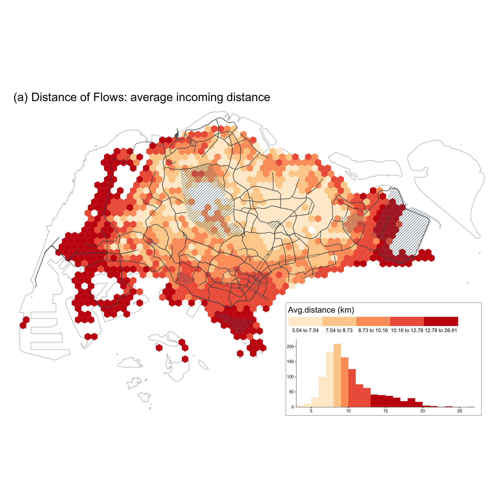
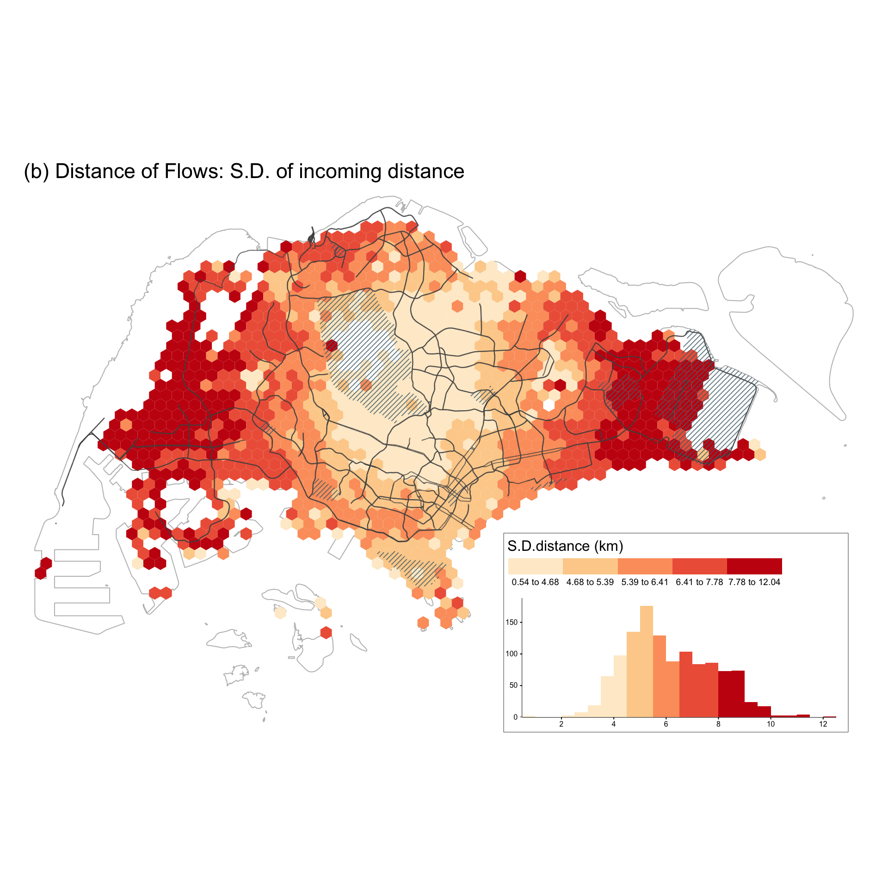
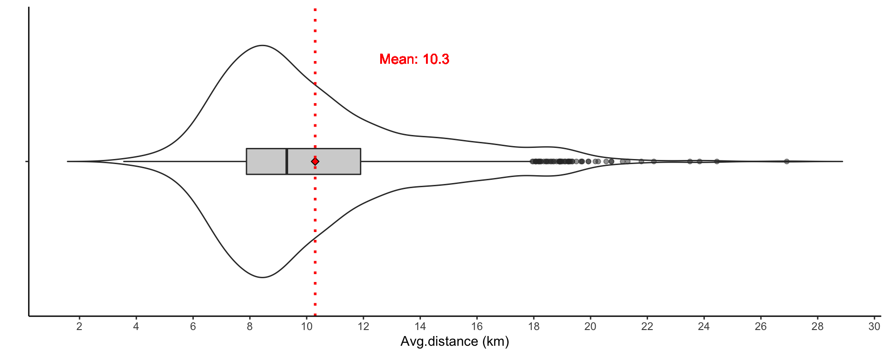
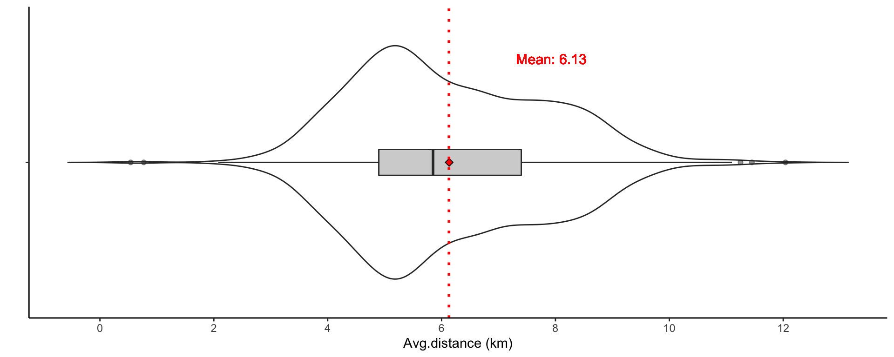
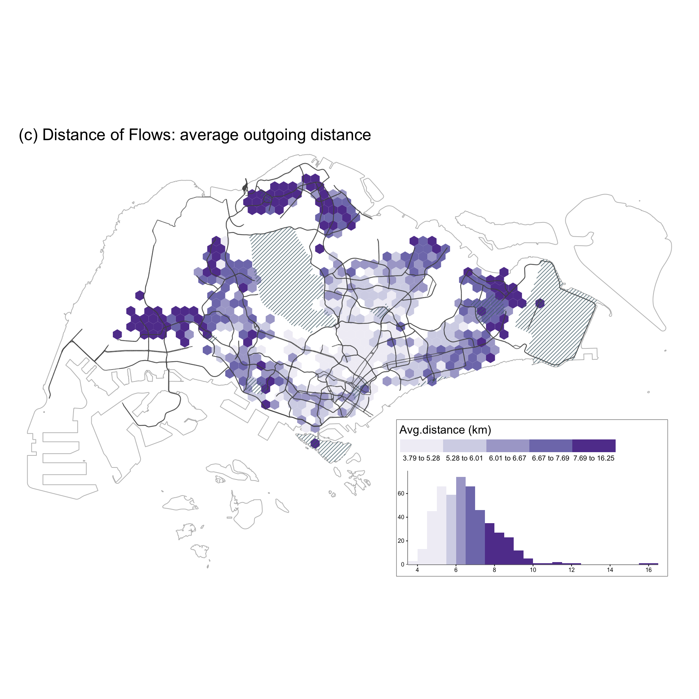
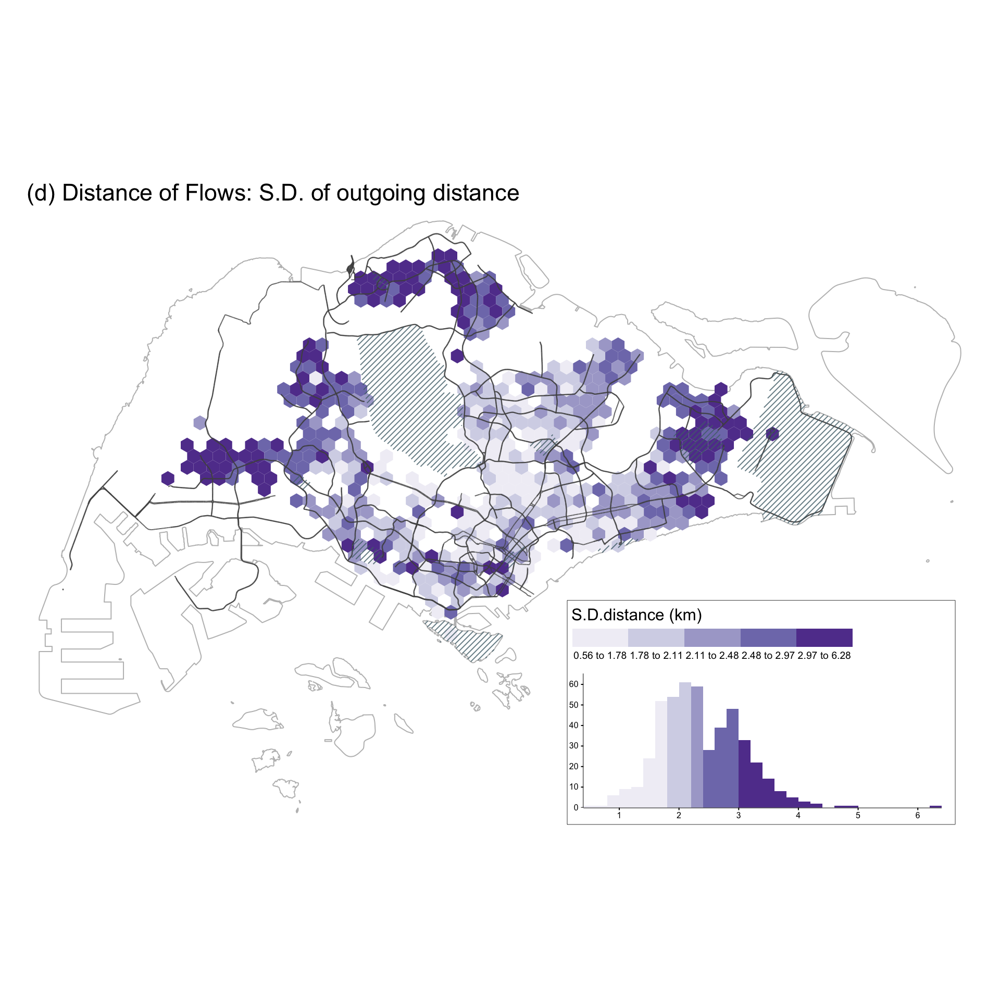
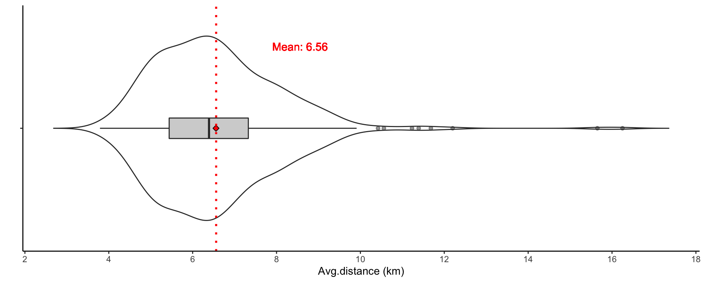
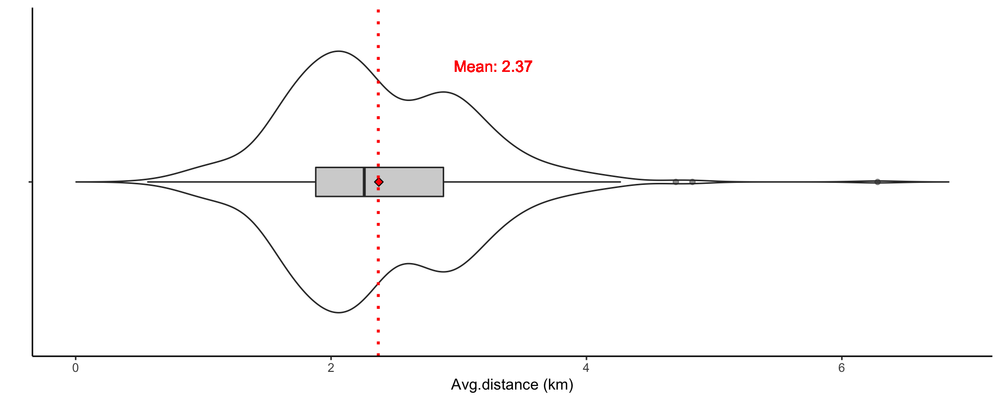

Last updated: 2021-05-25
Checks: 7 0
Knit directory: entangledfootprints/
This reproducible R Markdown analysis was created with workflowr (version 1.6.2). The Checks tab describes the reproducibility checks that were applied when the results were created. The Past versions tab lists the development history.
Great! Since the R Markdown file has been committed to the Git repository, you know the exact version of the code that produced these results.
Great job! The global environment was empty. Objects defined in the global environment can affect the analysis in your R Markdown file in unknown ways. For reproduciblity it’s best to always run the code in an empty environment.
The command set.seed(20210524) was run prior to running the code in the R Markdown file. Setting a seed ensures that any results that rely on randomness, e.g. subsampling or permutations, are reproducible.
Great job! Recording the operating system, R version, and package versions is critical for reproducibility.
Nice! There were no cached chunks for this analysis, so you can be confident that you successfully produced the results during this run.
Great job! Using relative paths to the files within your workflowr project makes it easier to run your code on other machines.
Great! You are using Git for version control. Tracking code development and connecting the code version to the results is critical for reproducibility.
The results in this page were generated with repository version 17299e2. See the Past versions tab to see a history of the changes made to the R Markdown and HTML files.
Note that you need to be careful to ensure that all relevant files for the analysis have been committed to Git prior to generating the results (you can use wflow_publish or wflow_git_commit). workflowr only checks the R Markdown file, but you know if there are other scripts or data files that it depends on. Below is the status of the Git repository when the results were generated:
Ignored files:
Ignored: .DS_Store
Ignored: .Rproj.user/
Ignored: data/.DS_Store
Untracked files:
Untracked: analysis/bibliography.bib
Untracked: code/flow_mapping.R
Untracked: code/viz.R
Untracked: data/data/
Untracked: data/derived_data/
Untracked: data/photos/
Untracked: data/raw_data/
Unstaged changes:
Modified: README.md
Modified: analysis/_site.yml
Modified: analysis/index.Rmd
Deleted: code/README.md
Note that any generated files, e.g. HTML, png, CSS, etc., are not included in this status report because it is ok for generated content to have uncommitted changes.
These are the previous versions of the repository in which changes were made to the R Markdown (analysis/006-calculate-distance.Rmd) and HTML (docs/006-calculate-distance.html) files. If you’ve configured a remote Git repository (see ?wflow_git_remote), click on the hyperlinks in the table below to view the files as they were in that past version.
| File | Version | Author | Date | Message |
|---|---|---|---|---|
| Rmd | 17299e2 | chenqingqing | 2021-05-25 | feat: calculate travel distance |
We calculate the spatial distance from the centroid of a home location to the centroid of each visited location. The mean distance across all users in a location is used for the visualizations and the spatial regression modeling in the paper.
# full grids
grids <- read_sf(here("data/derived_data/spatial_hex_grid.shp"), quiet = T) %>%
st_transform(crs = 3414)
# grid centroids
grid_centroids <- grids %>% st_centroid()
# identified home users
df_hms <- read_csv(here("data/derived_data/identified_hms.csv"))
# sg tweets
df_tweets <- readRDS(here("data/derived_data/deidentified_sg_tweets_updated.rds"))
## sg tweets sent by users with identified home locations
df_hm_tweets <- df_tweets %>% filter(u_id %in% df_hms$u_id)
# distinct users
distinct_users <- readRDS(here("data/derived_data/distinct_users.rds"))# function for distance calculation
cal_distance <- function(distinct_users, df_hm_tweets, type, grids, grid_index){
# step1: get visitors/locals in the input grid
if(type == "inflow"){
# visitors
users_in_grids <- distinct_users %>%
filter(grid_id == grid_index) %>% # all users in the input grid
filter(type == "visitor")
} else if(type == "outflow"){
# locals
users_in_grids <- distinct_users %>%
filter(grid_id == grid_index) %>% # all users in the input grid
filter(type == "local")
}
# step2: remove grids with fewer than 5 visitors/locals
if(n_distinct(users_in_grids$u_id) < 5){
message("Less than 5 users in the grid, remove this grid!")
output <- tibble()
} else{
# step3: get tweets for visitors/locals
if(type == "inflow"){
df_tweets <- df_hm_tweets %>%
filter(grid_id == grid_index) %>% # filter all tweets in the target grid
left_join(users_in_grids, .) # get tweets send by visitors
}else if(type == "outflow"){
df_tweets <- df_hm_tweets %>%
filter(u_id %in% users_in_grids$u_id) %>% # tweets sent by locals
filter(grid_id != grid_index) %>% # remove tweets sent at home place
mutate(home = grid_index) # add home location
}
# step 4: calculate distance
# geometry of home grid
home_geometry <- df_tweets %>%
left_join(., grids, by = c("home" = "grid_id")) %>%
st_as_sf() %>%
st_centroid() %>%
st_geometry()
# geometry of outside home grids
grid_geometry <- df_tweets %>%
left_join(., grids, by = "grid_id") %>%
st_as_sf() %>%
st_centroid() %>%
st_geometry()
# calculate distance
output <- df_tweets %>%
mutate(dist_hm2grid = st_distance(home_geometry, grid_geometry, by_element = TRUE) %>% as.numeric(),
dist_hm2grid_km = round(dist_hm2grid/1000, 4))
}
return(output)
} The inflow distance is saved under data/derived_data/ directory.
# inflow distance
if(file.exists(here("data/derived_data/dist_visitor_points.rds"))){
dist_visitor_points <- readRDS(here("data/derived_data/dist_visitor_points.rds"))
}else{
input_grids <- unique(distinct_users$grid_id)
dist_visitor_points <- do.call(bind_rows, map(input_grids, with_progress(function(x) cal_distance(distinct_users, df_hm_tweets, type = "inflow", grids, x))))
dist_visitor_points <- dist_visitor_points %>%
dplyr::select(grid_id, u_id, home, created_at, dist_hm2grid, dist_hm2grid_km)
saveRDS(dist_visitor_points, here("data/derived_data/dist_visitor_points.rds"))
}The outflow distance is saved under data/derived_data/ directory.
# outflow distance
if(file.exists(here("data/derived_data/dist_local_points.rds"))){
dist_local_points <- readRDS(here("data/derived_data/dist_local_points.rds"))
}else{
input_grids <- unique(distinct_users$grid_id)
dist_local_points <- do.call(bind_rows, map(input_grids, with_progress(function(x) cal_distance(distinct_users, df_hm_tweets, type = "outflow", grids, x))))
dist_local_points <- dist_local_points %>%
dplyr::select(home, u_id, grid_id, created_at, dist_hm2grid, dist_hm2grid_km)
saveRDS(dist_local_points, here("data/derived_data/dist_local_points.rds"))
}mean_sd_inflow_distance <- dist_visitor_points %>%
group_by(grid_id, u_id) %>%
dplyr::summarise(mean_dist_user = mean(dist_hm2grid_km)) %>%
group_by(grid_id) %>%
dplyr::summarise(mean_dist_grid = mean(mean_dist_user, na.rm = T) %>% round(., 2),
sd_dist_grid = sd(mean_dist_user, na.rm = T) %>% round(., 2)) %>%
left_join(., grids) %>%
st_as_sf()
spatial_viz(mean_sd_inflow_distance,
fill_var = "mean_dist_grid",
legend_title = "Avg.distance (km)",
main_title = "(a) Distance of Flows: average incoming distance",
main.title_size = 1.4,
legend.hist_height = 0.25, legend.hist_width = 0.5,
legend_width = 0.4, legend.hist_size = 0.5,
legend.title_size = 1.2, legend.text_size = 0.65)
[1] "#FEEBCF" "#FDD099" "#FC9F6A" "#EE6246" "#C81C12"spatial_viz(mean_sd_inflow_distance, fill_var = "sd_dist_grid",
legend_title = "S.D.distance (km)",
main_title = "(b) Distance of Flows: S.D. of incoming distance",
main.title_size = 1.4,
legend.hist_height = 0.25, legend.hist_width = 0.5,
legend_width = 0.4, legend.hist_size = 0.5,
legend.title_size = 1.2, legend.text_size = 0.65)
[1] "#FEEBCF" "#FDD099" "#FC9F6A" "#EE6246" "#C81C12"violin_viz(mean_sd_inflow_distance, var = "mean_dist_grid",
labs.x = "", labs.y = "Avg.distance (km)", breaks = seq(0, 30, 2),
y.shift = 3.5, x.shift = 1.4, text.size = 4)
violin_viz(mean_sd_inflow_distance, var = "sd_dist_grid",
labs.x = "", labs.y = "Avg.distance (km)", breaks = seq(0, 12, 2),
y.shift = 1.8, x.shift = 1.4, text.size = 4)
mean_sd_outflow_distance <- dist_local_points %>%
group_by(home, u_id) %>%
dplyr::summarise(mean_dist_user = mean(dist_hm2grid_km)) %>%
group_by(home) %>%
dplyr::summarise(mean_dist_grid = mean(mean_dist_user) %>% round(., 2),
sd_dist_grid = sd(mean_dist_user) %>% round(., 2)) %>%
left_join(., grids, by = c("home" = "grid_id")) %>%
st_as_sf()
spatial_viz(mean_sd_outflow_distance, fill_var = "mean_dist_grid",
legend_title = "Avg.distance (km)",
main_title = "(c) Distance of Flows: average outgoing distance",
main.title_size = 1.4,
legend.hist_height = 0.25, legend.hist_width = 0.5,
legend_width = 0.4, legend.hist_size = 0.5,
legend.title_size = 1.2, legend.text_size = 0.65, palette = "Purples")
[1] "#F1EFF6" "#D5D5E8" "#AAA8D0" "#7F7BB9" "#61409B"spatial_viz(mean_sd_outflow_distance, fill_var = "sd_dist_grid",
legend_title = "S.D.distance (km)",
main_title = "(d) Distance of Flows: S.D. of outgoing distance",
main.title_size = 1.4,
legend.hist_height = 0.25, legend.hist_width = 0.5,
legend_width = 0.4, legend.hist_size = 0.5,
legend.title_size = 1.2, legend.text_size = 0.65, palette = "Purples")
[1] "#F1EFF6" "#D5D5E8" "#AAA8D0" "#7F7BB9" "#61409B"violin_viz(mean_sd_outflow_distance, var = "mean_dist_grid",
labs.x = "", labs.y = "Avg.distance (km)", breaks = seq(0, 20, 2),
y.shift = 2, x.shift = 1.4, text.size = 4)
violin_viz(mean_sd_outflow_distance, var = "sd_dist_grid",
labs.x = "", labs.y = "Avg.distance (km)", breaks = seq(0, 10, 2),
y.shift = 0.9, x.shift = 1.4, text.size = 4)
sessionInfo()R version 4.0.4 (2021-02-15)
Platform: x86_64-apple-darwin17.0 (64-bit)
Running under: macOS Big Sur 10.16
Matrix products: default
BLAS: /Library/Frameworks/R.framework/Versions/4.0/Resources/lib/libRblas.dylib
LAPACK: /Library/Frameworks/R.framework/Versions/4.0/Resources/lib/libRlapack.dylib
locale:
[1] en_US.UTF-8/en_US.UTF-8/en_US.UTF-8/C/en_US.UTF-8/en_US.UTF-8
attached base packages:
[1] stats graphics grDevices utils datasets methods base
other attached packages:
[1] here_1.0.1 purrrogress_0.1.1 RColorBrewer_1.1-2 tmap_3.3-1
[5] sf_0.9-7 forcats_0.5.1 stringr_1.4.0 dplyr_1.0.5
[9] purrr_0.3.4 readr_1.4.0 tidyr_1.1.3 tibble_3.1.0
[13] ggplot2_3.3.3 tidyverse_1.3.0
loaded via a namespace (and not attached):
[1] fs_1.5.0 lubridate_1.7.10 httr_1.4.2
[4] rprojroot_2.0.2 tools_4.0.4 backports_1.2.1
[7] bslib_0.2.4 utf8_1.1.4 R6_2.5.0
[10] KernSmooth_2.23-18 DBI_1.1.1 colorspace_2.0-0
[13] raster_3.4-5 withr_2.4.1 sp_1.4-5
[16] tidyselect_1.1.0 leaflet_2.0.4.1 compiler_4.0.4
[19] git2r_0.28.0 leafem_0.1.3 cli_2.3.1
[22] rvest_0.3.6 testextra_0.1.0.9000 xml2_1.3.2
[25] sass_0.3.1 scales_1.1.1 classInt_0.4-3
[28] digest_0.6.27 rmarkdown_2.7 base64enc_0.1-3
[31] dichromat_2.0-0 pkgconfig_2.0.3 htmltools_0.5.1.1
[34] highr_0.8 dbplyr_2.1.0 htmlwidgets_1.5.3
[37] rlang_0.4.10 readxl_1.3.1 rstudioapi_0.13
[40] farver_2.1.0 jquerylib_0.1.3 generics_0.1.0
[43] jsonlite_1.7.2 crosstalk_1.1.1 magrittr_2.0.1
[46] Rcpp_1.0.6 munsell_0.5.0 fansi_0.4.2
[49] abind_1.4-5 lifecycle_1.0.0 stringi_1.5.3
[52] leafsync_0.1.0 whisker_0.4 yaml_2.2.1
[55] tmaptools_3.1-1 grid_4.0.4 parallel_4.0.4
[58] promises_1.2.0.1 crayon_1.4.1 lattice_0.20-41
[61] stars_0.5-1 haven_2.3.1 hms_1.0.0
[64] knitr_1.31 pillar_1.5.1 codetools_0.2-18
[67] reprex_1.0.0 XML_3.99-0.5 glue_1.4.2
[70] evaluate_0.14 modelr_0.1.8 vctrs_0.3.6
[73] png_0.1-7 httpuv_1.5.5 testthat_3.0.2
[76] pkgcond_0.1.0 cellranger_1.1.0 gtable_0.3.0
[79] postlogic_0.1.0.1 assertthat_0.2.1 xfun_0.21
[82] lwgeom_0.2-5 broom_0.7.5 e1071_1.7-4
[85] later_1.1.0.1 class_7.3-18 viridisLite_0.3.0
[88] workflowr_1.6.2 units_0.6-7 ellipsis_0.3.1
[91] parsetools_0.1.3